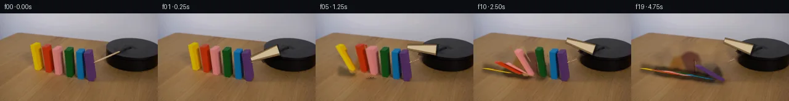

![首帧]()

Round 00
2026-11-05T20:26:35.401659+00:00像素候选变化代码 +351/−0inspection 更新
pixels 8f2c9dad2b59aae0 · code 2989749d4a0ed63d
查看本轮 generate.py 真实 diff
--- previous/generate.py
+++ current/generate.py
@@ -0,0 +1,351 @@
+#!/usr/bin/env python3
+"""
+PixelWorld case_0036: rotating wooden stick on a black disc sweeps clockwise
+and knocks the nearest (purple) block; the six colored blocks topple in a
+domino cascade along the row (right -> left on screen).
+
+Pure local pixel pipeline (PIL / numpy / scipy / OpenCV inpaint):
+ * frame 00 is a byte-exact copy of first_frame.png
+ * static background plate built by inpainting the block silhouettes and the
+ stick out of frame 00, with matched band-limited wood grain
+ * blocks are exact frame-0 sprites warped by a pseudo-3D tilt about their
+ bottom hinge edge (4x supersampled), with analytically drawn soft shadows
+ * the stick is a tapered anti-aliased quad rotated about the clamp pivot
+"""
+from pathlib import Path
+import numpy as np
+from PIL import Image
+import cv2
+from scipy import ndimage
+
+ROOT = Path(__file__).parent
+SS = 4 # supersampling factor for dynamic overlays
+FALL_DIR = np.array([-0.978, -0.207]) # screen unit: purple -> yellow
+W_DIR = np.array([1.0, 0.06]) # block hinge / face-width direction
+REACH_K = 0.80 # lying length / upright height (screen proj.)
+PIVOT = np.array([196.0, 60.0])
+TIP0 = np.array([153.0, 80.0])
+
+# ------------------------------------------------------------------ palette
+# (name, segmentation zone (x0,x1,y0,y1))
+BLOCKS = [
+ ('yellow', (44, 73, 40, 102)),
+ ('red', (62, 94, 44, 102)),
+ ('pink', (81, 105, 48, 102)),
+ ('green', (101, 124, 50, 108)),
+ ('blue', (119, 141, 52, 112)),
+ ('purple', (133, 158, 52, 114)),
+]
+
+def block_mask(rgb, hsv, name, zone):
+ H, S, V = hsv[..., 0], hsv[..., 1], hsv[..., 2]
+ R, G, B = rgb[..., 0], rgb[..., 1], rgb[..., 2]
+ yy, xx = np.mgrid[0:rgb.shape[0], 0:rgb.shape[1]]
+ x0, x1, y0, y1 = zone
+ z = (xx >= x0) & (xx <= x1) & (yy >= y0) & (yy <= y1)
+ if name == 'yellow':
+ m = (H >= 24) & (H <= 48) & (S >= 70) & (V >= 105)
+ elif name == 'red':
+ m = (((H <= 16) | (H >= 242)) & (S >= 60) & (V >= 70))
+ elif name == 'pink':
+ m = (R >= 135) & (G >= 65) & (R - G >= 30) & (B >= 60) & (R > B) & (S < 170)
+ elif name == 'green':
+ m = (H >= 68) & (H <= 118) & (S >= 40) & (V >= 28)
+ elif name == 'blue':
+ m = (H >= 126) & (H <= 164) & (S >= 60) & (V >= 45)
+ else: # purple
+ m = (H >= 180) & (H <= 224) & (S >= 30) & (V >= 35)
+ m &= z
+ lab, n = ndimage.label(m)
+ if n == 0:
+ raise RuntimeError(f'no mask for {name}')
+ sizes = ndimage.sum(np.ones_like(lab), lab, range(1, n + 1))
+ return lab == (int(np.argmax(sizes)) + 1)
+
+
+def largest_cc(m):
+ lab, n = ndimage.label(m)
+ if n == 0:
+ return m
+ sizes = ndimage.sum(np.ones_like(lab), lab, range(1, n + 1))
+ return lab == (int(np.argmax(sizes)) + 1)
+
+
+# ------------------------------------------------------------------ plate
+def disc_mask(shape):
+ """geometric mask of the black platform (top ellipse + cylinder body)"""
+ m = np.zeros(shape, np.uint8)
+ cv2.ellipse(m, (226, 70), (60, 27), 0, 0, 360, 1, -1)
+ cv2.rectangle(m, (170, 66), (286, 97), 1, -1)
+ cv2.ellipse(m, (226, 96), (60, 9), 0, 0, 180, 1, -1)
+ return m.astype(bool)
+
+
+def stick_polygon(width_tip=2.0, width_base=4.0, tip=TIP0, base=PIVOT):
+ d = tip - base
+ d = d / np.linalg.norm(d)
+ n = np.array([-d[1], d[0]])
… diff truncated; 264 more lines …